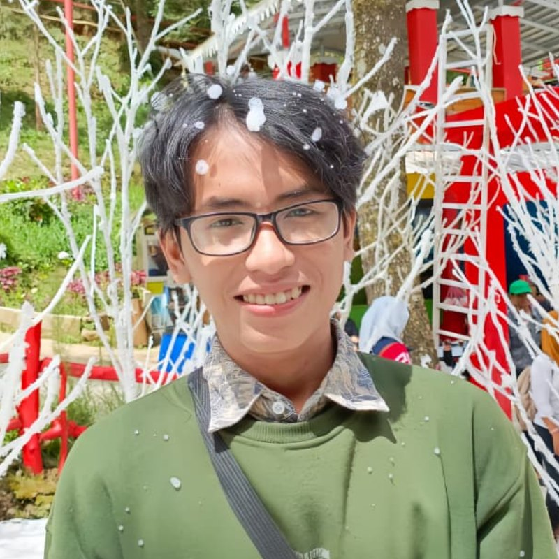

Kontributor Connvel
Nama pena · Langlang Sya'ban
Langlang Sya'ban Deloner Purin
FantasiMisteri
Halo..
- Nama lengkap
- Langlang Sya'ban Deloner Purin
- Nama pena
- Langlang Sya'ban
- Genre favorit
- Fantasi, Misteri
- Karya terbit
- 1 karya
Rak tulisan
Cerita yang menghubungkan dunia.

Kontributor Connvel
Nama pena · Langlang Sya'ban
Halo..
Rak tulisan